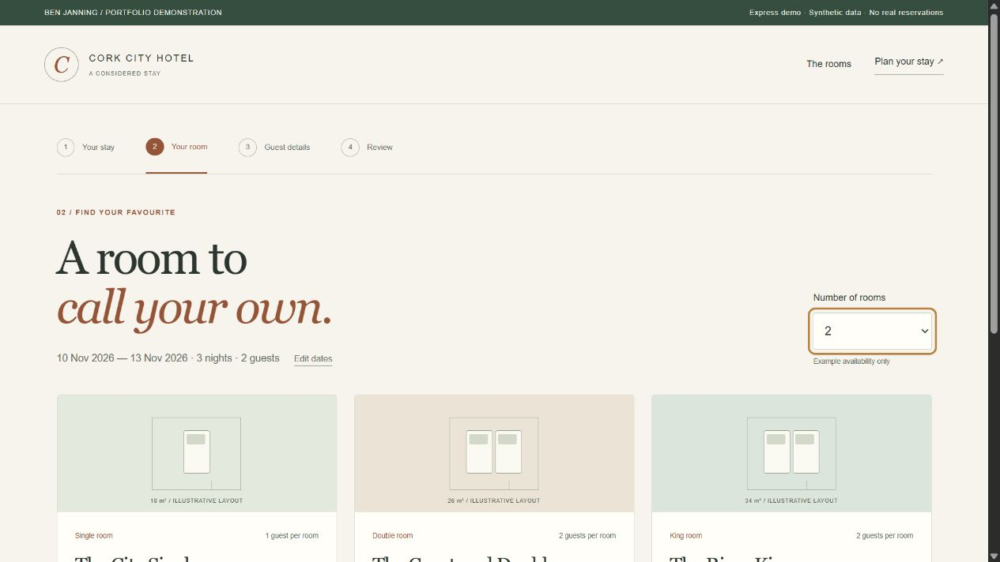
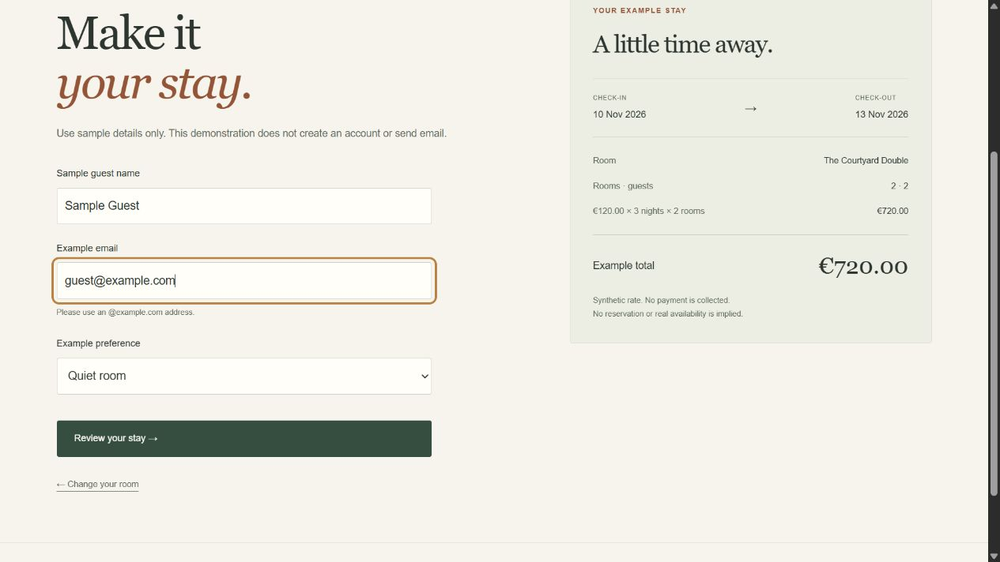
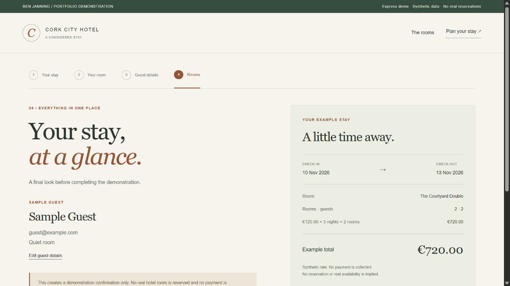
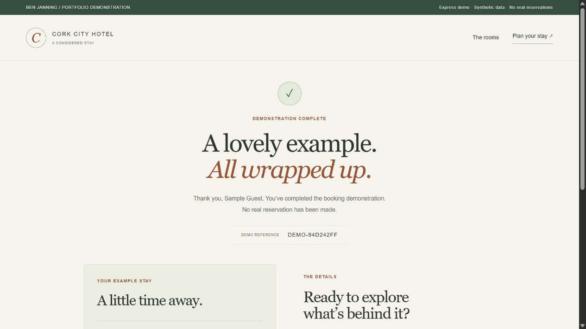

Hotel booking prototype.
A complete demonstration booking journey, from dates and room cards to guest details and confirmation.
Public demo: browser-based static version. See source for architecture and limitations.

What I built
Evolved my original Express/EJS hotel coursework into a polished application with a complete booking journey and a matching browser-based public demo.
Why it matters
A multi-step transaction should carry information reliably from one screen to the next. The project explores session state, validation and pricing across a booking journey.
How it works
- 01
Choose dates and a guest count, then compare three example room types.
- 02
Select room quantity and enter synthetic guest details; review the itemised total.
- 03
Confirm the demonstration and receive a clearly labelled demo reference. No real reservation or payment is made.
What it demonstrates
Server-rendered web development, session handling, input validation and turning a multi-step process into a working application.
Evidence, with context.
15 automated hotel tests pass. Browser-tested the full Express journey and the matching static demo. Two €120 rooms over three nights total €720. The optional live MySQL test is skipped because no Docker/MySQL runtime is available.








Scope and limitations
The public GitHub Pages demo runs in the browser, sharing the interface and rules with the server source. It does not run Express/MySQL. Neither mode creates real inventory, reservations, accounts or payments. The isolated MySQL setup is supplied but its live connection is not verified.
Visual provenance and source attribution are recorded in the evidence register ↗.
Under the surface.
Architecture, methods and improvements
A shared EJS shell, browser journey and pure booking-rules module power both modes. Express independently validates selections and guest details, recalculates prices from its catalog, protects session writes with CSRF tokens and handles duplicate confirmations. Optional MySQL uses a pooled synthetic catalog with safe errors. Original templates remain in views/legacy and Git history.
Try it locally
Run npm ci, npm test and npm start for Express at http://127.0.0.1:3000. No database is needed by default. npm run build:demo generates the public static version. An optional isolated MySQL Docker setup and opt-in integration test are documented separately.
The portfolio is a static GitHub Pages site. Server applications run locally; the portfolio does not collect bookings, credentials or payments.